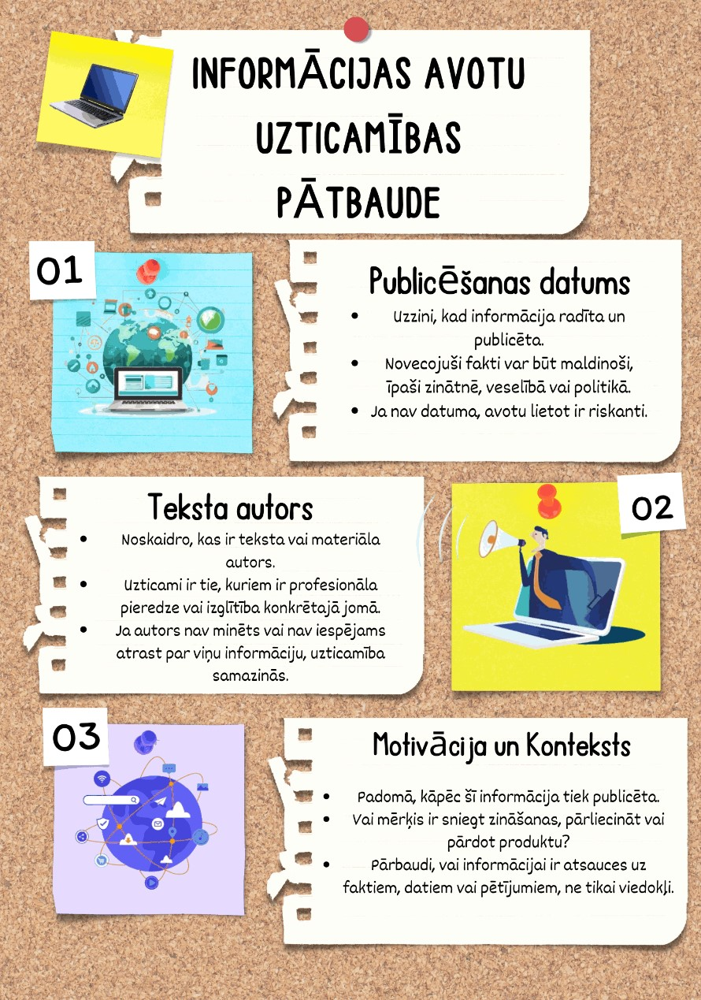

Pārliecinies, kad raksts publicēts. Novecojuši fakti var būt kļūdaini.
Meklē nozares ekspertus. Ja autors nav zināms vai tam trūkst pieredzes, avots ir riskants.
Vai mērķis ir izglītot, vai arī kaut ko pārdot un manipulēt? Meklē atsauces uz faktiem, nevis tikai viedokļus.
